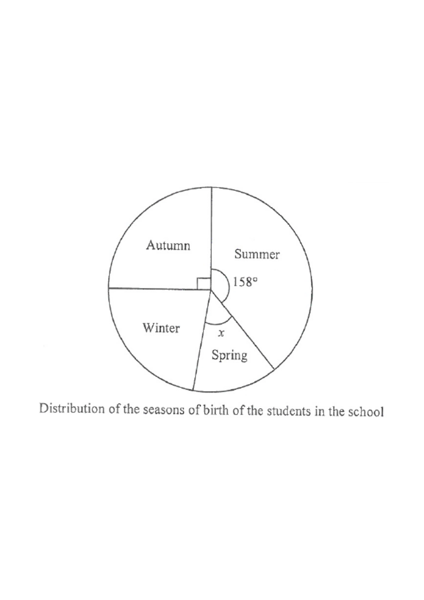

Topic 15 · Statistics — Pie chart, angle & proportion
Interactive Pie Chart
Summer 158°Autumn 90°Spring x°Winter ?
Step 1: read the given information from the pie chart.
2017 #7
The pie chart shows the distribution of the seasons of birth of the students in a school.
If a student is randomly selected from the school, then the probability that the selected
student was born in spring is $\dfrac{1}{9}$.
(a) Find $x$. (b) In the school, there are 180 students born in winter.
Find the number of students in the school. [4 marks]

Figure (original exam diagram)
Angles at a Point\(\theta_{1}+\theta_{2}+\theta_{3}+\theta_{4}=360^\circ\)Summer \(158^\circ\), autumn \(90^\circ\), spring \(x\) and winter \(W\) together make one full turn of the pie chart.
1Read the data from the pie chart
A full turn of the pie chart represents all students, i.e. $360^\circ$.
From the figure: Summer $=158^\circ$, Autumn is a right angle $=90^\circ$,
and Spring $=x$.
Hint: the total of all four sectors is $360^\circ$.
Sector Angle and Probability\(\dfrac{\theta}{360^\circ}=\dfrac{\text{frequency}}{\text{total}}\)A probability of \(\dfrac{1}{9}\) for spring means its sector is \(\dfrac{1}{9}\) of \(360^\circ\), so \(\dfrac{x}{360}=\dfrac{1}{9}\).
2Use the probability to write an equation
Spring is a fraction $\dfrac{1}{9}$ of the whole circle, so its angle is
$\dfrac{1}{9}\times 360^\circ$:
\[
\frac{x}{360}=\frac{1}{9}
\]
Hint: “probability $=\dfrac{1}{9}$” means “angle $=\dfrac{1}{9}$ of $360^\circ$”.
3Solve for $x$ — part (a)
\[
x=\frac{360}{9}=40^\circ
\]
Hint: cross-multiplying gives $9x=360$.
4Find the winter angle
Let $n$ be the number of students in the school. The winter sector angle is
\[
W = 360^\circ-90^\circ-158^\circ-40^\circ = 72^\circ .
\]
Hint: subtract the three known sectors from $360^\circ$.
Direct Proportion in a Pie Chart\(\dfrac{n_{1}}{\theta_{1}}=\dfrac{n_{2}}{\theta_{2}}\)The \(72^\circ\) winter sector carries \(180\) students, so the \(360^\circ\) total is \(\dfrac{180}{72}\times360\).
5Set up the proportion — part (b)
The winter sector is $\dfrac{72}{360}$ of the circle, and it represents 180 students:
\[
\frac{n}{360}=\frac{180}{72}
\]
Hint: number of students is directly proportional to the sector angle.
6Solve for $n$
\[
n=\frac{180}{72}\times 360 = 900
\]
So the school has 900 students in total.
Hint: $360\div72=5$, so $n=180\times5$.
Answer: (a) $x = 40^\circ$ · (b) the number of students in the school is 900.
PRACTICESimilar question — try it yourself
Question. The pie chart shows the distribution of the seasons of birth of the students in a school. If a student is randomly selected from the school, then the probability that the selected student was born in spring is \(\dfrac{1}{8}\). The summer sector is \(150^\circ\) and the autumn sector is \(96^\circ\). (a) Find \(x\), the angle of the spring sector. (b) In the school, there are \(276\) students born in winter. Find the number of students in the school. [4 marks]
Show the worked solution
Step 1. Probability \(=\dfrac{1}{8}\) means the spring sector is \(\dfrac{1}{8}\) of \(360^\circ\): \(\dfrac{x}{360}=\dfrac{1}{8}\).
Step 2. \(x=\dfrac{360}{8}=45^\circ\).
Step 3. The winter sector is \(W=360^\circ-150^\circ-96^\circ-45^\circ=69^\circ\).
Step 4. Number of students is proportional to the sector angle: \(\dfrac{n}{360}=\dfrac{276}{69}\), so \(n=\dfrac{276}{69}\times360=4\times360=1440\).